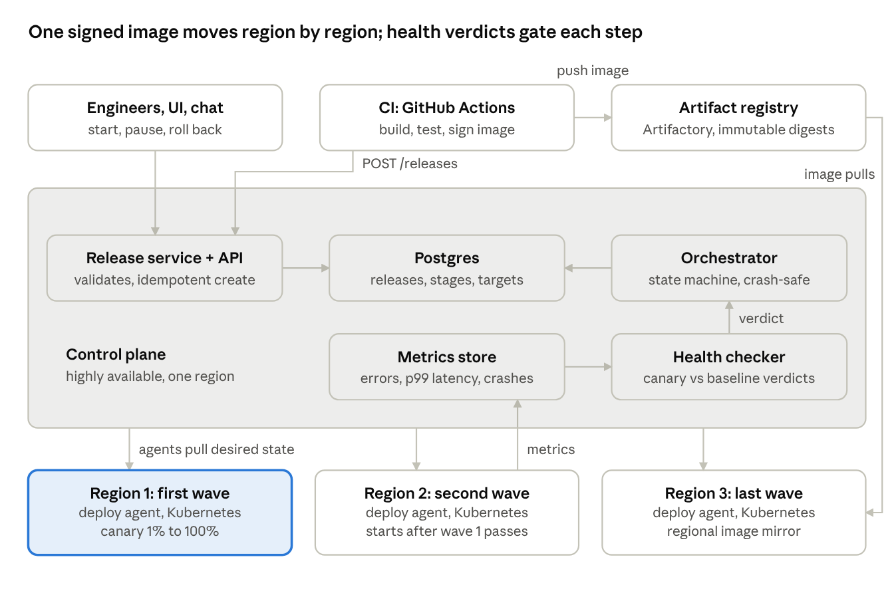

Understanding the problem
Roblox runs hundreds of backend services across many regions, and engineers ship changes to them every day. A release system takes a merged change and gets it safely into production everywhere: tested, rolled out a little at a time, watched, and pulled back automatically when something looks wrong. Interviewers from platform and infrastructure teams often know this space deeply, so real-world judgment matters more here than raw scale.
Functional requirements
Core:
A merged commit produces one versioned, immutable build artifact.
A release moves that artifact through stages: staging → canary → region waves → everywhere.
Automatic health checks decide whether each stage can continue.
Automatic rollback when a check fails, and manual pause, resume, abort and rollback.
A history of what is deployed where, and who changed it.
Below the line: the build system internals (compilers, caching), test frameworks, infrastructure provisioning (Terraform), game-client releases through app stores.
Non-functional requirements
Safety first: an unverified artifact never reaches production, and a bad release reaches only a small slice of users before it's caught.
Fast recovery: rollback in under 5 minutes.
The deploy system must not be a single point of failure for production: if it goes down, running services keep running; only new deploys pause.
Throughput is modest: ~500 services × ~2 deploys a day ≈ 1,000 releases a day. The hard part is correctness and safety, not scale. Say this out loud, because it tells the interviewer you know where the difficulty actually is.
Auditable: every action logged.
The set-up
Core entities
Artifact: one built, signed container image, identified by its content digest (
sha256:…). Never changes.Release: "deploy artifact X of service S using rollout plan P". It has a state.
Stage run: one step of a release (e.g. "canary in us-east, 1%"), with its own state and health verdict.
Target: a cluster or region where a service runs, with its desired version, current version and last known good version.
API
POST /releases
{ "service": "matchmaker", "artifact_digest": "sha256:9f2…", "plan": "standard" }
→ 201 { "release_id": "rel_881", "state": "IN_PROGRESS" } // same service + digest → same release
POST /releases/{id}/pause | /resume | /abort
POST /releases/{id}/rollback → { "rollback_release_id": "rel_882" }
GET /releases/{id} → state, current stage, health verdicts
GET /services/{name}/deployments?env=prodCI calls POST /releases after a green build. Humans use the UI or a chat bot, which call the same API.
High-level design
1. A merge produces one immutable artifact
CI (GitHub Actions) builds the service, runs tests, and produces a container image. It signs the image and pushes it to an artifact registry (Artifactory, backed by object storage). The image's digest is its identity: staging and production will run these exact bytes. Rebuilding per environment would mean testing one thing and shipping another.
2. A release moves through stages
CI calls the Release service, which validates the request (is the artifact signed? is there a deploy freeze?) and writes a releases row plus one stage_runs row per stage of the plan into Postgres.
An Orchestrator drives each release as a state machine: start stage 1, wait for its verdict, start stage 2, and so on. It doesn't touch clusters directly. It only changes the desired version for a target (targets.desired_digest = sha256:9f2…).
In each region, a deploy agent (the GitOps pattern, e.g. Argo CD) watches the desired state for its clusters and makes Kubernetes match it: it updates the Deployment, and Kubernetes rolls pods to the new image.
Why pull instead of push? If the control plane is down, every region keeps running exactly what it had. Production never depends on the deploy system being up.
3. Health checks decide each step
A Health checker reads the metrics store (Prometheus or similar) for the stage that's running and compares the new version against the old one: error rate, p99 latency, crash and out-of-memory counts, and a business signal like successful game joins. It writes a verdict (pass, fail, inconclusive) to the stage run. The orchestrator acts only on verdicts.
4. Rollback, automatic and manual
Each target keeps last_good_digest. When a verdict fails, or a human hits rollback, the orchestrator sets the desired version back to last_good_digest. The image is still in the regional mirror, so nothing is rebuilt. When a release finishes everywhere, its digest becomes the new last_good_digest.
5. History and audit
Every state change appends to an audit_log table: who, what, when, from which state to which. GET /services/{name}/deployments reads from it.
Potential deep dives
1. How do you decide a release is healthy?
Bad solution: fixed thresholds. "Fail if the error rate is above 1%." Some services normally run at 2%, others at 0.01%, and every service's traffic swings through the day. You get false alarms and missed regressions.
Good solution: compare before vs after. Compare the new version's metrics with the same service's metrics before the deploy. Challenge: time-of-day changes (a traffic spike at 5 pm) look like regressions.
Great solution: canary vs baseline, side by side. Run the new version on a small slice (1%, then 10%, 50%, 100%) and, at the same time, an equally sized slice of the old version as a baseline. Compare the two over the same minutes, so traffic swings affect both equally. Use a statistical comparison per metric (error rate, p99 latency, crashes, a business metric like game joins). Three outcomes: pass, fail, or inconclusive (too little traffic, so extend the bake time). This is how Netflix's Kayenta and Spinnaker work. Naming that is a nice touch.
2. How fast and safe is rollback?
Bad: rebuild the old commit and deploy it. Slow, and the rebuilt image may differ from what ran before.
Good: redeploy the last_good_digest image. It's already in the registry and regional mirrors, so there's no build and it's a known-good artifact. Usually a few minutes.
Great: during the canary, the old version is still running, so rollback is just shifting traffic back, which takes seconds. After 100%, keep the previous version's pods around (scaled down) for a bake window so even then rollback is fast. And state the important caveat: you can't roll back a database migration. Use expand-then-contract migrations (add the new column, deploy code that handles both, drop the old column only several releases later) so every release stays safely rollback-able. Feature flags separate shipping code from turning it on.
3. Rolling out across regions
Bad: all regions at once. One bad release takes down everything.
Good: one region at a time, in a fixed order.
Great: waves with growing size: a small, low-traffic region first; then about 25% of regions; then the rest. Health verdicts gate each wave. Respect each region's local time (don't start during a region's peak or the middle of its night). Deploy freezes block releases during big events. If one region fails, pause the whole release and roll back only the affected regions. Deploy agents pull from the control plane, so a control plane outage only stops new deploys.
4. What if the orchestrator crashes mid-release?
All release state is in Postgres. A replacement orchestrator (run several behind a leader lease) finds IN_PROGRESS releases and resumes from the last completed stage. Every action is idempotent: "set cluster X's desired version to D" does nothing new if it's already D. Two engineers clicking rollback at once? Optimistic locking with a version column on the release row: the second update fails and re-reads.
5. Supply-chain safety
Only artifacts built and signed by trusted CI can run. Verify the signature at deploy time, and have Kubernetes admission control reject unsigned images. Secrets come from Vault at runtime, never baked into the image.
Final design

CI builds and signs one image and creates a release. The orchestrator sets each region's desired version wave by wave; agents in the region pull it and run the canary. The health checker compares canary and baseline and writes a verdict, and only a pass lets the next wave start. A fail sends the region back to last_good_digest.
What's expected at each level
Mid-level. A pipeline from CI to production with stages and a rollback button. Knows Kubernetes rolling updates. May need prompting about health checks and multi-region.
Senior. Build once, promote the same digest. Canary vs baseline with concrete metrics and bake times. Automatic rollback via last_good_digest, and the database-migration caveat stated unprompted. Region waves, freezes, and why agents pull. Crash recovery with persisted state and idempotent actions. Says that throughput is small and the difficulty is safety.
Staff+. All of that, plus: how to measure the pipeline itself (the DORA metrics: deploy frequency, lead time, change failure rate, time to restore), how to get 500 teams to adopt it (a paved road, sensible default plans, opt-outs), handling dependencies between services' releases, and a story for game-client releases (store rollouts, feature flags, minimum-version kill switch).
Return To Homepage